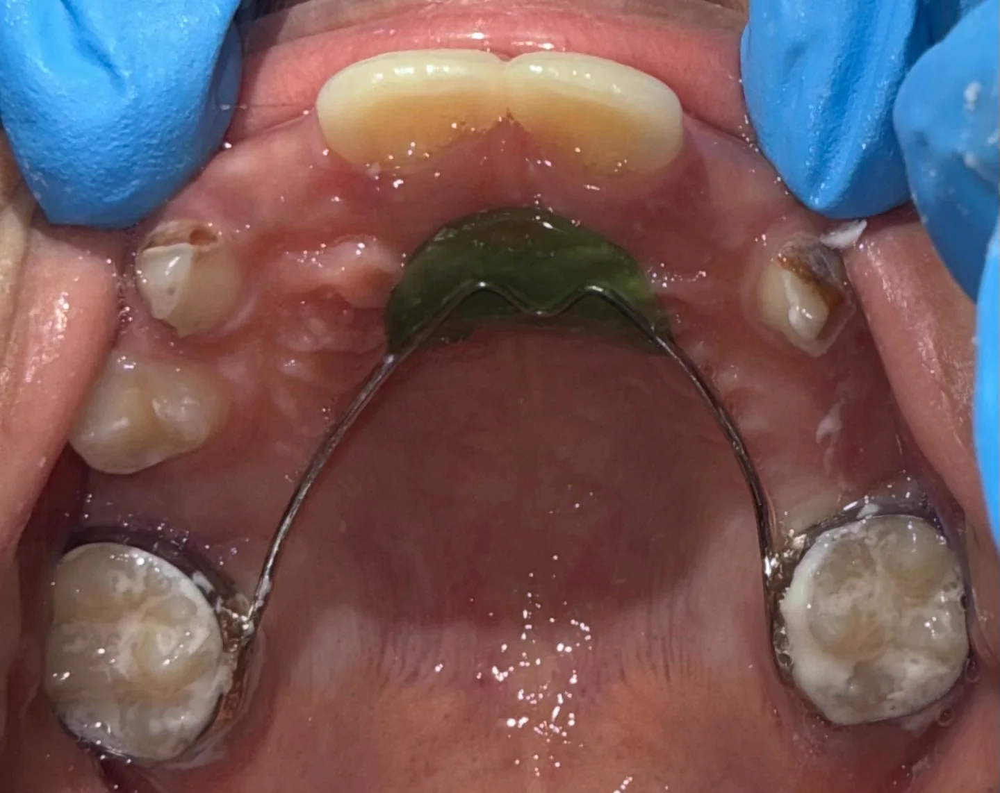
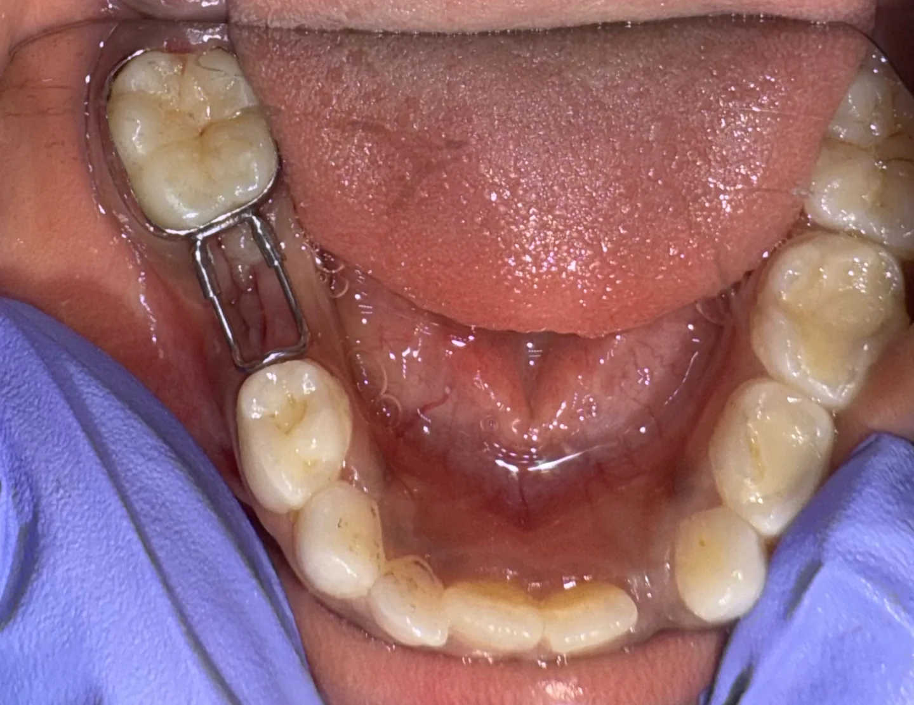
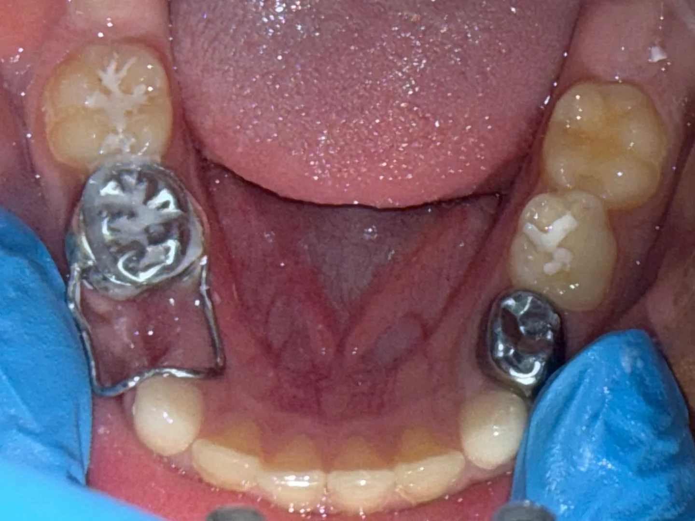

Case 01Clinical photographs
Groper’s appliance · anterior space maintainer
View photographs
Select a photograph for a closer look
Hi, I’m Dr. Kashmira. A specialist pediatric dentist, and a familiar face for children finding their confidence in the dental chair.

11+years of clinical experience
MDSPediatric & Preventive Dentistry
DHA + DOHlicensed in the UAE
4 languagesEnglish · Hindi · Marathi · Kannada

Some children walk in full of questions. Others need a little time to feel at home.
My work brings together specialist pediatric dentistry, prevention and a thoughtful approach to anxious children and children with additional healthcare needs. There’s room to ask questions, explain what’s happening and find the next step together.
Meet the person behind the smileA first visit, a worried child, a growing smile.
Let’s start with what your family needs.
 A space for little personalities.
A space for little personalities.Check-ups, parent guidance, fluoride, sealants and minimally invasive care. A chance to get familiar with the dentist and talk about everyday habits.
Ask about a visitBehaviour guidance and individual care for children who need more support. Sedation options can be discussed after assessment, where appropriate.
Ask about a visitRestorative and pediatric endodontic care, with the options explained to you. Treatment is planned around the tooth, your child and their stage of development.
Ask about a visitSpace management, habit counselling, Myobrace and early orthodontic assessment, including Invisalign First when suitable.
Ask about a visitAssessment and management of dental trauma and other urgent dental problems. Call to discuss availability; online messages are not monitored as an emergency service.
Ask about a visitSelected clinical photographs,
grouped by treatment.
Select a photograph for a closer look

View photographsSelect a photograph for a closer look
Select a photograph for a closer look

View photographsSelect a photograph for a closer look

View photographsSelect a photograph for a closer look
Photographs show individual cases. Treatment choices and outcomes vary.
Tell me about your child, what worries them and what helps them feel comfortable.
A chance to meet, look around and assess their teeth, with explanations along the way.
Understand the findings, discuss your options and decide on the next step for your child.
Start with what’s on your mind.
Yes. Please mention any worries when you arrange the appointment. Dr. Kashmira works with anxious children and uses behaviour guidance to help them become familiar with the visit. The approach is adapted to each child.
Yes. Her clinical experience includes caring for children with autism, ADHD, cerebral palsy and other healthcare needs. Share any sensory preferences, medical history or support that helps your child before the visit.
Dr. Kashmira has training in nitrous oxide conscious sedation and experience in general anaesthesia case planning and coordination. Suitability, setting and availability need an individual assessment; ask about these when booking.
Choose the area that works for your family and contact Dr. Kashmira to confirm her availability there. Appointment times and treatment availability can vary between practices.
Bring relevant medical and dental information, a list of medicines and any previous X-rays you have. Mention your child’s concerns and communication preferences so the visit can be planned around them.


Get to know
my world.
For more of Dr. Kashmira’s day-to-day work and conversations about children’s dentistry, find her on Instagram.
@dr.kashmirapawar ↗